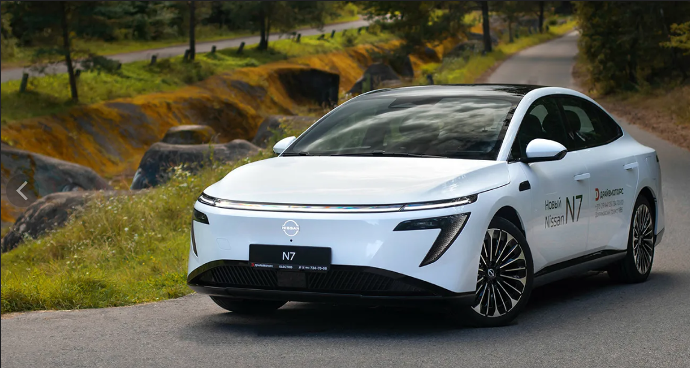
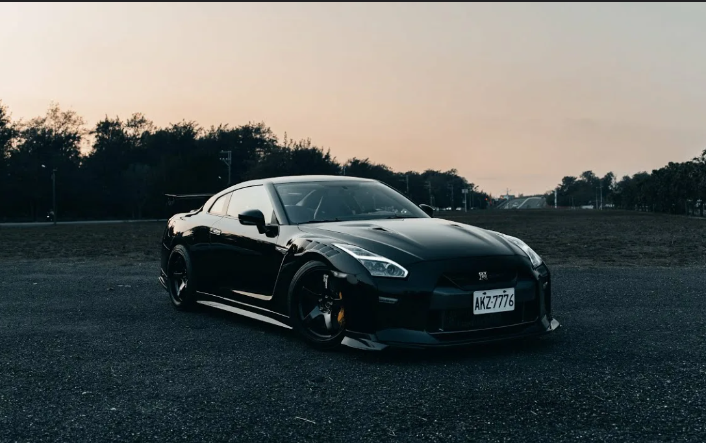
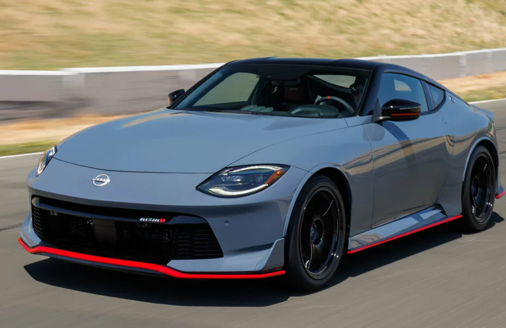

Nissan: три легенды разных эпох
Сравнение электрического седана N7, легендарного суперкара GT-R (R35) и спорткара Nissan Z.
Nissan N7

Nissan N7 — это современный электрический седан, представленный
в 2025 году.
Отличается обтекаемым дизайном и системой автономного вождения
Momenta R7.
Системы безопасности
- ABS, ESP
- 6 подушек безопасности
- Комплекс Momenta R7 с лидаром
- AEB — автоторможение
«N7 — это то, каким должен быть современный электромобиль: тихий, быстрый и технологичный.» — Auto Express
Рейтинг безопасности: 85%
Топ-3 причины выбрать N7
- Нулевой расход топлива
- Пожизненная гарантия на батарею
- Комплекс автономного вождения Momenta R7
Nissan GT-R (R35) –

GT-R R35 выпускался с 2007 по 2025 год.
Оснащён двигателем VR38DETT — V6 3.8 л с двойным
турбонаддувом.
Системы безопасности
- ABS, ESP
- 6 подушек безопасности
- Полный привод ATTESA E-TS
«Godzilla вернулся — и снова порвал всех.» — Top Gear
Рейтинг безопасности: 70%
Nissan Z — н.в.

Nissan Z — спорткар, сочетающий классические пропорции
прошлых Z-моделей и современные технологии.
Доступен с механикой или 9-ступенчатым автоматом.
Системы безопасности
- ABS, ESP, VDC, TCS
- Подушки безопасности
- AEB с обнаружением пешеходов
- Blind Spot Warning
«Nissan Z — это любовное письмо классическим спорткарам.» — Car and Driver
Рейтинг безопасности: 75%
Мини-сравнение по ключевым критериям
| Модель | Тип | Разгон | Цена |
|---|---|---|---|
| N7 | Электро | 4.8 с | ~1.4 млн ₽ |
| GT-R | Бензин | 3.5 с | ~$115 000 |
| Z | Бензин | 4.5 с | ~$43 000 |
N7 — электро, 4.8 с, 1.4 млн ₽
GT-R — бензин, 3.5 с, $115 000
Z — бензин, 4.5 с, $43 000
Сравнительная таблица
| Характеристика | Nissan N7 | Nissan GT-R (R35) | Nissan Z |
|---|---|---|---|
| Тип двигателя | Электрический | Бензиновый V6 3.8 Twin-Turbo | Бензиновый V6 3.0 Twin-Turbo |
| Расход топлива | 0 л/100 км | ~12.8 л/100 км | ~11.7 л/100 км |
| Тип трансмиссии | Автоматическая (редуктор) | Роботизированная (DCT) | Механическая / Автоматическая |
| Количество передач | 1 | 6 | 6 (МКПП) / 9 (АКПП) |
| Габариты (Д×Ш×В, мм) | 4930 × 1895 × 1492 | 4655 × 1895 × 1370 | н/д |
| Объём багажника | 484–507 л | н/д | 241 л |
| Системы безопасности |
Системы безопасностиABS, ESP, 6 подушек, Momenta R7 с лидаром |
Системы безопасностиABS, ESP, 6 подушек, ATTESA E-TS |
Системы безопасностиABS, ESP, VDC, TCS, AEB |
| Рейтинг краш-тестов | н/д | н/д | н/д |
| Разгон 0–100 км/ч | 4.8 сек | 3.5 сек | 4.5 сек |
| Максимальная скорость | 160–200 км/ч | 315 км/ч | 250 км/ч |
| Начальная цена | ~1.4 млн ₽ | ~$115 000 | ~$43 000 |
| Wi-Fi и Bluetooth | Есть | Есть | Есть |
| Тормозная система | Дисковые | Вентилируемые дисковые | Дисковые |
| Системы предотвращения столкновений | Есть (AEB, LKA) | Есть (поздние версии) | Есть (AEB, BSW, LDW) |
| Гарантийный срок | Пожизненная (Китай) | 3 года / 100 000 км | 3 года / 60 000 км |
| Данные из открытых источников. н/д — нет данных. | |||